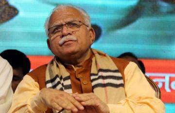
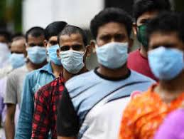
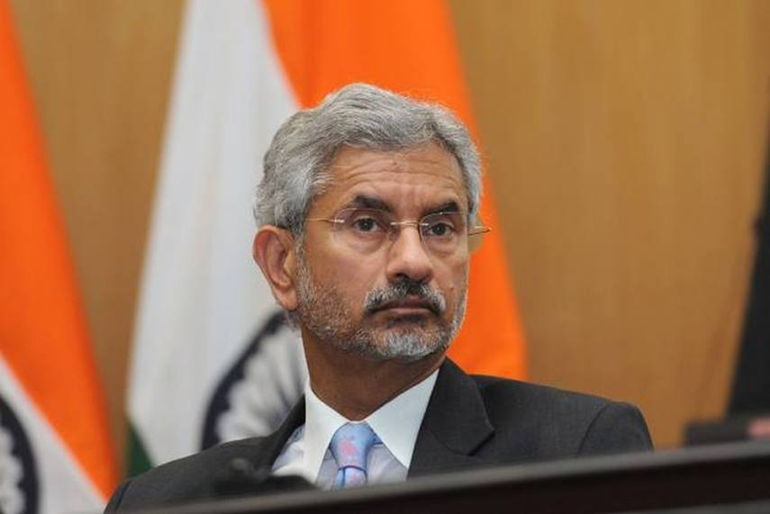

The Global Trends: Ahead of Time
January, 2021
Are you missing what’s important? Here's the news you need and more.
Memoir offers insider look at presidents, a queen and a pope
By Nelson Graves | 11 Jan 2021 | Americas, Eyewitness, Government, Joe Biden, News Decoder Updates
News Decoder correspondent Gene Gibbons covered six U.S. presidents. His White House memoir offers portraits of presidents, a queen and a pope. He covered six U.S. presidents as a White House correspondent, and now he has written a memoir that offers an inside look at modern American history and portraits of presidents, a queen and a pope.
News Decoder correspondent Gene Gibbons has distilled three decades of reporting from the White House into a 260-page book, “Breaking News: A Life in Journalism,” which is available on Amazon and Barnes & Noble.
“The memoir of a longtime Reuters White House Correspondent, this book is loaded with stories about presidents and other U.S. political figures, the Queen of England and a sainted Pope,” according to the summary on Amazon.
Gibbons reported from the White House first with United Press International, then Reuters, and covered Presidents Richard Nixon, Gerald Ford, Jimmy Carter, Ronald Reagan, George H.W. Bush and Bill Clinton.
He had an insider’s view of Watergate, the end of the Vietnam War, two global oil crises, the Iran hostage crisis, the Iran-Contra scandal and Clinton’s impeachment.
Presidents, a queen and a sainted pope are featured in the memoir.
 News-Decoder founder Nelson Graves is at the Eurasian Media Forum in Almaty, Kazakhstan. Today Graves held a masterclass on Environmental Journalism.
His main message was that while climate change poses immense problems for the world, it also offers huge opportunities for positive change, led by youth.
Gibbons recently wrote about attending elementary school with U.S. President-elect Joe Biden, concluding that the former vice president will be a caring leader as president.
I asked Gibbons what message his book has for young people around the world. “There’s no substitute for old fashioned shoe leather journalism — gathering as much information from as many sources as possible,
subjecting it to dogged fact-checking and reporting it with scrupulous honesty,” he said.
News-Decoder founder Nelson Graves is at the Eurasian Media Forum in Almaty, Kazakhstan. Today Graves held a masterclass on Environmental Journalism.
His main message was that while climate change poses immense problems for the world, it also offers huge opportunities for positive change, led by youth.
Gibbons recently wrote about attending elementary school with U.S. President-elect Joe Biden, concluding that the former vice president will be a caring leader as president.
I asked Gibbons what message his book has for young people around the world. “There’s no substitute for old fashioned shoe leather journalism — gathering as much information from as many sources as possible,
subjecting it to dogged fact-checking and reporting it with scrupulous honesty,” he said.
It started with a realization during a family holiday two years ago. Our children, in their 20s, were up to speed on international headlines even during vacation thanks to smartphones.
But questions kept coming. Why is there fighting in Syria? Flooding in India but drought in the U.S.? Why care about Iran's new president?
Haryana epicentre of farm stir, says Khattar after meeting Amit Shah
By Written by Kanishka Sarkar, Hindustan Times, New Delhi
On the day his ‘kisan mahapanchayat’ programme in Karnal had to be cancelled after protesting farmers uprooted tents and damaged the stage at the venue,
Haryana Chief Minister Manohar Lal Khattar said the Centre was not likely to repeal the three farm laws.
“Discussion can be held on certain points, but I do not think government is going to withdraw these laws,” he said.
Hours after the Supreme Court stayed the implementation of three contentious farm laws enacted by the Centre in September,
Haryana chief minister Manohar Lal Khattar on Tuesday met home minister Amit Shah. The Bharatiya Janata Party (BJP) leaders discussed the law and
order situation as Haryana is the “epicentre of farmers’ stir,” Khattar said after the meeting, according to news agency PTI.

“Today, the Supreme Court stayed the farm laws and formed a committee. All these were discussed (during the meeting with Amit Shah).
Events on January 26 should go well as it's a national festival. Farmers assured in their press conference that it'll be peaceful.
It's being hoped that they'll call off agitation and go back home,” Haryana chief minister told news agency ANI after the meeting.
The remark came after Congress on Monday demanded that Haryana chief minister resign as he has "lost the faith of the people" and the moral authority to rule after farmers did not allow his chopper to land during an event in Karnal.
The protesting farmers, however, have refused to call off the demonstrations, till the three agricultural legislations are repealed.
They said they won't accept any committee formed by the apex court to end the impasse between the government and the protesters as “the members of the committee are pro-government.”
Coronavirus | No option to select between Covishield and Covaxin, says Union Health Secretary
By Written by Raghav Sen, Hindustan Times, New Delhi
People would not have the option of making a choice between the two available COVID-19 vaccines – Covishield and Covaxin – when the rollout starts on January 16, Union Health Secretary Rajesh Bhushan said at a press conference on Tuesday.
The Union government, he said, had agreed to procure 110 lakh Covishield doses from the Serum Institute of India (SII) at ₹200/dose and 55 lakh doses of Covaxin from Bharat Biotech (BBIL), of which 38.5 lakh doses is priced at ₹295/dose.
Four other COVID-19 vaccines were under trial currently in the country and that it had so far received “54,72,000 doses of the vaccine to be distributed, while 100% doses to be received by 14th Jan in all States/UTs’’.
‘Encouraging environment’
“Our expectations from the States/UTs is that all logistics should be ready from January 16 and there should be continuous oversight and personal involvement in the entire process of roll-out.
Also, there should be special focus on communication activities and utilisation of all types of channels to create an encouraging environment,” said Mr. Bhushan.
Member (Health) Niti Aayog Dr. V.K. Paul said the two vaccines available in India were safe and that there should not be any doubt about this.
“They have been tested on thousands of people and the side-effects are negligible. All the vaccines in the world used currently against COVID-19 have been cleared under the emergency-use framework. As we go ahead, we will have more options.
India has also been able to get these vaccines at very competitive prices,’’ he stated.
Mr. Bhushan noted that the situation was worrisome across the world with cases graphs still climbing in the U.S., the U.K., Brazil and South Africa.
“In India, 12,584 new cases were reported in the last 24 hours and active cases continue to decline and it is now less than 2.2 lakh.
Only two States currently have more than 50,000 active cases – Maharashtra and Kerala,’’ he added.
All Members Chosen For Supreme Court Committee Had Backed Farm Laws
Reported by Mariyam Alavi, Edited by Anindita SanyalUpdated: January 12, 2021 8:09 pm IST
The list includes Bhupinder Singh Mann, the national president of the Bhartiya Kisan Union and All India Kisan Coordination Committee;
Dr Parmod Kumar Joshi, an agricultural economist who is also the Director for South Asia,
International Food Policy Research Institute; Ashok Gulati, agricultural economist and former chairman of the Commission for Agricultural Costs and Prices; Anil Ghanwat, the chief of Shetkari Sanghatana, who in articles written in the media have expressed views in favour of the farm laws.
The four members of the Supreme Court-appointed committee to help resolve the ongoing farmers' protest, have taken pro-farm law stance in the past, NDTV has found.
The committee was named on Tuesday evening in an order of the court, which was hearing a bunch of petitions challenging the Centre's farm laws passed in parliament in September.
In its order, the court said the committee will listen to the "grievances of the farmers relating to the farm laws and the views of the government and make recommendations".
Mr Gulati, who was also a member of Prime Minister's Economic Advisory Council from 1999 to 2001, has written opinion pieces in national dailies, and also spoken to the media in support of the farm laws.
Bolster India’s rise to counter China challenge: Secret US strategy for Indo-Pacific
Reported By Rezaul H Laskar, Published on Jan 13, 2021 10:09 AM IST
Among the “desired end states” of the strategy is India-US cooperation to “preserve maritime security and counter Chinese influence in South and Southeast Asia and other regions of mutual concern”
The strategy, framed more than two years before the India-China military standoff along the Line of Actual Control (LAC), makes more than 20 mentions of India and sees the country as “preeminent in South Asia” and taking on “the leading role in maintaining Indian Ocean security” while increasing engagement with Southeast Asia and expanding economic and defence cooperation with other US allies and partners. On the other hand, the document, classified “secret” and “not for foreign nationals”, sees China as a strategic competitor to the US intent on dissolving American alliances and partnerships in the Indo-Pacific and circumventing “international rules and norms to gain an advantage”. It also states China will use its dominance in cutting edge technologies to “pose profound challenges to free societies”. The strategy is based on the assumption that a “strong India, in cooperation with like-minded countries, would act as a counterbalance to China”, and that New Delhi’s “preferred partner on security issues” is Washington.
Crime Syndicate Responsible for 1993 Mumbai Blasts Given State Protection, Enjoying 5-star Hospitality: Jaishankar
Reported By News18
"International cooperation in combating terrorism 20 years after the adoption of resolution 1373"- said Jaishankar at a United Nations Security Council (UNSC)
Foreign Minister S Jaishankar on Tuesday slammed countries aiding and abetting terrorism and providing terrorists financial assistance and safe havens, in an indirect swipe at Pakistan. India asserted that the international community must not allow terrorism to be justified and terrorists glorified as it told the UN Security Council that the crime syndicateresponsible for the 1993 Mumbai bomb blasts is given not just state protection but is enjoying five-star hospitality,a thinly-veiled reference to the D-company head Dawood Ibrahim believed to be hiding in Pakistan.  Jaishankar proposed an eight-point Action Plan for the UN system to credibly address the menace of terrorism and ensure effective action. He asserted that linkages between terrorism and transnational organised crime must be fully recognised and addressed vigorously. He is the senior-most Indian leader to address the UNSC since India joined the powerful 15-member UN body as a non-permanent member this month for a two-year tenure. "Some states lack legal and operational frameworks and technical expertise to detect, investigate and prosecute terrorist financing cases. However, there are other states that are guilty of aiding and supporting terrorism and provide financial assistance and safe havens," said Jaishankar. "We must summon political will to combat terrorism. There must be no ifs and buts in the fight. Nor should we allow terrorism to be justified and terrorists glorified. All members must fulfill the obligations enshrined in international counter-terrorism instruments," he said. Referring to Dawood Ibrahim, in hiding in Pakistan, Jaishankar said: "We have seen crime syndicate responsible for 1993 Mumbai blasts not just given state protection but enjoying five-star hospitality." Last August, Pakistan had for the first time acknowledged the presence of Ibrahim on its soil after the government imposed sweeping sanctions on 88 banned terror groups and their leaders which also included the name of the underworld don wanted by India.